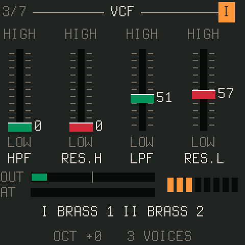
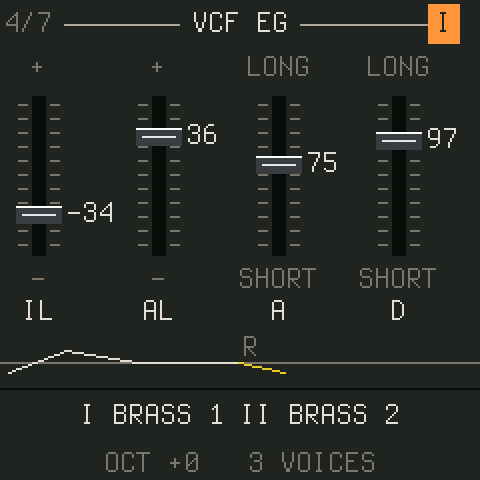

CS-1
a CS-80 for the M-VAVE FM-1
CS-1 is a firmware for the M-VAVE FM-1 pocket synthesizer that turns it into a Yamaha CS-80 in spirit: eight voices of two channels each, every channel with its own oscillator, high-pass and low-pass filters, a sine that bypasses them, two envelopes and a touch response section; the sub oscillator, the ring modulator and the chorus of the original; and, because this one lives in a dawless rig rather than a studio, a delay and a big reverb with a shimmer built in. The 22 preset tones come from the CS-80's own manual, and 45 sounds are built after the records it is famous for.
It is meant to be played from a sequencer: a Novation Circuit Tracks over the TRS jack, say, with its macro knobs mapped by MIDI learn and its clock driving the delay. With no hands on the keys, a pressure curve each note plays by itself does what the CS-80's aftertouch did.
Play it in your browser Try BLADE BRASS Try HUMAN NATURE



What is in it
The voice
Two channels (I and II) per voice, each a VCO with sawtooth and / or pulse with PWM and noise, a 12 dB high-pass into a 12 dB low-pass with resonance, a post-filter sine, a filter envelope with initial and attack levels, an ADSR, and velocity and pressure into brightness and level. Feet per channel, channel II detunable, each voice drifting a few cents if you like.
The performance side
The sub oscillator to pitch, filter and level; the ring modulator with its envelope; portamento and glissando; the initial pitch bend; keyboard control; brilliance and resonance levers; sustain modes I and II; and an auto after touch curve for sequencers.
The effects
The CS-80's chorus / tremolo, in stereo; a delay with ping-pong and clock sync; an eight-line hall reverb up to 25 s with a shimmer. All inside the 5.8 ms the FM-1 gives a block, with room to spare.
The sounds
The 22 preset tones read off the manual's charts, pickable per channel with HOME and a key. 45 sounds after Vangelis, Toto, Thriller and the rest, with the tones, settings and techniques the sources document, loaded dry as the CS-80 was. 32 user slots.
Install
Installing any custom firmware on the FM-1 is at your own risk. The usual advice from the FM-1 community holds: go back to M-VAVE's stock firmware before installing a different custom one, and know the rescue: hold OCT− while switching on, and the FM-1 comes up in a USB rescue mode from which any installer still works.
- Get
cs1.fwscfrom the releases, or build it (the README says how). - Connect the FM-1 over USB-C and switch it on.
- Install from a terminal with the installer in the source tree:
It needs Python 3 withpython3 tools/fm1_install.py cs1.fwscmidoandpython-rtmidi, shows what it found, asks for a yes, and checks the FM-1 comes back reporting CS-1's identity (FM-1_95x).
Going back: M-VAVE's updater, or the FM-1 Firmware Hub's "Return to official V15" option, both restore the stock firmware. Your CS-1 user presets live in their own flash sector and survive a reinstall of CS-1.
In a dawless rig
Plug the sequencer's MIDI out into the FM-1's TRS jack (the FM-1 is TRS type A). Set the channel on the MIDI page, or leave it on OMNI. Program change picks the sounds. Press REC, turn the panel knob you want the sequencer's macro to move, move the macro: that CC is bound from then on. Enable clock out on the sequencer and the delay's SYNC divisions and the sub oscillator's bar sync follow the tempo. The manual's MIDI section has the full map.
Credits and licence
CS-1 stands on Dinghy (zvenson), the minimal FM-1 firmware template, which is the Felucca / SLOOP platform by Leo Kuroshita (Hügelton Instruments) and isod89; and on FM-106 (PatttF) for the second core as an audio worker and MIDI in on the TRS jack. The browser build follows X0X's (Charles Vestal). The preset tones were read off the Yamaha CS-80 owner's manual. Everything is GPL-3.0-only.